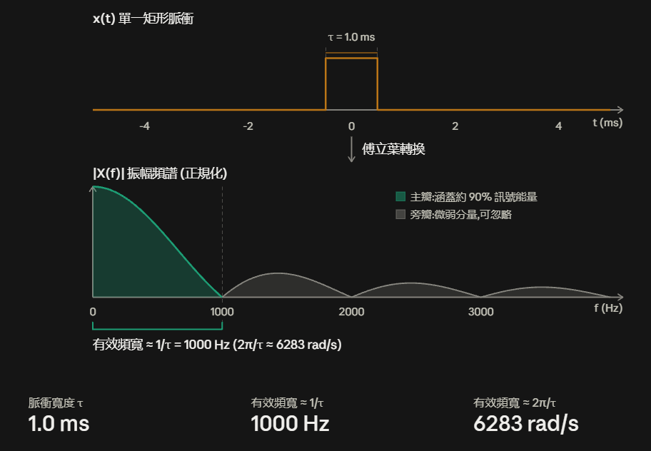

3. 頻寬、有效頻寬與傅立葉轉換性質 (Bandwidth & Fourier Properties)¶
在前面的章節中，我們掌握了正弦波的數學通式，並理解了週期性複合訊號可由多個正弦波疊加而成。
本節將深入簡報的核心主題：什麼是訊號的頻寬？為什麼壓縮時間會擴展頻寬？傅立葉轉換具備哪五大關鍵性質？
什麼是頻寬 (Bandwidth)？¶
在實體層與訊號處理中，頻寬有明確且嚴謹的物理定義：
核心定義：頻寬的標準單位是 赫茲 (Hertz, \(\text{Hz}\))，而非每秒位元數 (\(\text{bps}\))。
頻寬是由「訊號本身所包含的頻率分量範圍」決定的，而非由傳輸介質決定（Bandwidth is determined by the signal, not the medium）。
graph LR
SPEC["訊號包含的頻率分量<br>(最低頻率 f_min 到 最高頻率 f_max)"] --> BW["頻寬 (Bandwidth)<br>B = f_max - f_min (單位：Hz)"]範例：¶
- 若一個訊號由 \(y = 0.5 \cos(2\pi \cdot 2 x) + 3 \cos(2\pi \cdot 5 x)\) 組成：
- 包含的頻率分量為 \(2\text{ Hz}\)（振幅 0.5）與 \(5\text{ Hz}\)（振幅 3）。
- 其頻寬即為 \(5\text{ Hz} - 2\text{ Hz} = 3\text{ Hz}\)（若計入直流成分 \(0\text{ Hz}\)，則為 \(5\text{ Hz} - 0\text{ Hz} = 5\text{ Hz}\)）。
時域壓縮與頻寬擴展 (Time Compression vs Bandwidth)¶
當我們在時域上「壓縮（Compress）」一個訊號時，頻寬會如何變化？
graph TD
ORIG["原始訊號<br>週期 T, 包含頻率分量 1, 2, 3, 4 Hz ..."] -->|在時域壓縮訊號| COMP["壓縮後訊號<br>新週期 T_new = 0.5 × T"]
COMP --> FREQ["新頻率分量加倍：2, 4, 6, 8 Hz ..."]
FREQ --> RES["結論：時域壓縮 → 頻譜展開 → 頻寬加倍！"]- 時域與頻域的互補關係：
- 新週期 \(= \text{舊週期} \times 0.5\)
- 新頻率 \(= \text{舊頻率} \times 2\)
- 通訊意涵：在時域中把脈衝壓得越窄（代表每秒能傳送更多位元，Bit Rate 提升），在頻域中佔用的頻寬就越大。
週期性 vs 非週期性數位訊號的傅立葉轉換¶
數位訊號在頻域中的分佈特性取決於其是否具有週期性：
graph TD
DIGITAL["數位訊號 (Digital Signals)"] --> PERIODIC["a. 週期性數位訊號 (Periodic Digital Signal)<br>例如：連續重複的方波脈衝串"]
DIGITAL --> NON_PERIODIC["b. 非週期性數位訊號 (Nonperiodic Digital Signal)<br>例如：單一獨立的矩形脈衝"]
PERIODIC --> DISCRETE["離散頻譜 (Discrete Spectrum)<br>由基頻與奇數次諧波柱狀分量組成：<br>f, 3f, 5f, 7f, 9f, 11f, 13f ..."]
NON_PERIODIC --> CONTINUOUS["連續頻譜 (Continuous Spectrum)<br>頻譜呈現連續的 sinc 函數波形分佈"]- 週期性數位訊號：經傅立葉級數展開後，僅在特定離散頻率點（\(f, 3f, 5f, \dots\)）出現諧波振幅。
- 非週期性數位訊號（單一脈衝）：經傅立葉轉換後，頻譜分佈是一條連續平滑的曲線（\(\text{sinc}\) 函數）。
有效頻寬 (Effective Bandwidth)¶
對於單一矩形脈衝訊號，其理論頻譜延伸至無窮大。但在實務通訊中：
graph LR
PULSE["單一矩形脈衝<br>(脈衝寬度 τ)"] --> FT["傅立葉轉換"]
FT --> MAIN["主瓣區域 (Main Lobe)<br>涵蓋約 90% 以上訊號能量"]
FT --> WEAK["高頻旁瓣微弱分量<br>(可直接忽略)"]
MAIN --> EFF["有效頻寬 (Effective Bandwidth)<br>Effective BW ≈ 2π/τ (rad/s) 或 1/τ (Hz)"]- 定義：忽略能量極微弱的高頻旁瓣，僅保留集中了約 \(90\%\) 總能量 的主瓣頻率區間，稱為「有效頻寬」。
-
反比規律： $\(\text{脈衝寬度 } \tau \downarrow \implies \text{有效頻寬 } \text{Effective BW} \uparrow\)$ 脈衝寬度越窄，有效頻寬越大。
-

傅立葉轉換的五大關鍵物理性質 (Simple Properties of Fourier Transform)¶
簡報總結了通訊系統設計最重要的五大傅立葉轉換性質：
1. 矩形函數的傅立葉轉換 (Rectangular Function)¶
- 時域上的矩形函數 \(x(t) = \text{rect}(t, \tau)\)（寬度為 \(\tau\)），在頻域對應為 \(\text{sinc}\) 函數。
- 頻譜第一個零點位置與脈衝寬度成反比，因此 \(\text{寬度 } \tau \downarrow \implies \text{有效頻寬 } \uparrow\)。
2. 時移性質 (Time Shift)¶
- 核心結論：\(s(t)\) 與平移後的 \(s(t + \Delta)\) 擁有完全相同的頻譜振幅分佈（Same Spectrum）。
- 物理直覺：在不同的時間點發送相同的訊號脈衝，其所佔用的頻譜成分與頻寬完全不變。
3. 時間縮放性質 (Time Scaling)¶
- 壓縮訊號 (Compress) \(\implies\) 位元時間縮短、位元傳輸率提高（Bit Rate \(\uparrow\)）\(\implies\) 頻寬增加（Bandwidth \(\uparrow\)）。
- 拉伸訊號 (Stretched) \(\implies\) 位元時間拉長、位元傳輸率降低（Bit Rate \(\downarrow\)）\(\implies\) 頻寬減小（Bandwidth \(\downarrow\)）。
4. 線性相加性質 (Sum of Time Domain Functions)¶
- 設複合訊號為兩個子訊號之和：\(s(t) = s_1(t) + s_2(t)\)。
- 只要 \(s_1\) 與 \(s_2\) 不發生破壞性完全抵消，\(s(t)\) 的頻率分量就是 \(s_1(t)\) 與 \(s_2(t)\) 頻率分量的聯集。
- 連續傳送位元序列的頻寬結論：
- 假設 \(s_1(t)\) 與 \(s_2(t)\) 是在不同時間點連續送出的相同矩形脈衝。
- 根據時移性質，兩者頻譜相同；根據相加性質，\(s(t)\) 的頻寬就等於單一脈衝 \(s_1(t)\) 的頻寬！
- 傳送一長串連續位元流，其所需頻寬依然由單一個位元脈衝的寬度決定。
5. 乘上餘弦函數性質 (Multiplied by a Cosine Function)¶
- 若基頻訊號 \(s(t)\) 的頻率分量落在 \([0, f_s]\) 區間。
- 當 \(s(t)\) 乘上載波 \(\cos(2\pi f_c t)\) 後，其頻率分量將被整體搬移至 \([f_c - f_s, \, f_c + f_s]\) 區間（通常載波頻率 \(f_c \gg f_s\)）。
- 這是無線調變（Modulation）將低頻訊號搬移到高頻發射的理論依據。
傅立葉五大性質對照總結表¶
| 性質編號 | 性質名稱 | 時域行為 \(s(t)\) | 頻域頻譜行為 | 通訊工程意涵 |
|---|---|---|---|---|
| 1 | 矩形函數轉換 | 脈衝寬度 \(\tau\) 縮減 | 主瓣寬度展寬 | 脈衝越窄，有效頻寬越大 |
| 2 | 時移性質 (Time Shift) | \(s(t + \Delta)\) 時間平移 | 頻譜振幅不變 | 不同時間送出相同波形，佔用頻率相同 |
| 3 | 時間縮放 (Time Scaling) | 壓縮/拉伸時間 | 頻寬成反比擴展/收縮 | 傳輸速率提高 \(\implies\) 頻寬需求成正比增加 |
| 4 | 線性相加 (Sum) | \(s_1(t) + s_2(t)\) 連續脈衝 | 頻譜為子訊號之聯集 | 連續位元串的頻寬由單一位元脈衝決定 |
| 5 | 乘上餘弦 (Multiply Cosine) | \(s(t) \cdot \cos(2\pi f_c t)\) | 頻譜平移至 \(f_c \pm f_s\) | 無線調變將基頻搬移至高頻載波 |
下一步¶
現在我們知道數位脈衝的頻寬特性，也知道乘上餘弦波可以搬移頻譜。
那麼在無線通訊中，如何具體設定載波頻率與脈衝時間？接收端又如何還原資料？請前往下一節：4. 無線傳輸、調變與解調機制。